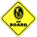

 Welcome to the Residents World!!
This section of my site is dedicated to the anonymous art-rock collective known as The Residents. If you're not familiar with The Residents, you can get a good introduction from their about page.
The Residents Shrine
- My Residents Collection
- A listing of (almost) all The Residents stuff I own
- Album Reviews
- A collection of reviews I've written, many of which predate this site by years
- The Residents in Japan
- The Residents are practically Japanese, but no one knows
- Archived Streams
- A collection of a few random radio/Twitch streams I've archived
Eyeball Et Cetera
- The Residents Official Website
- The only canonical source of Residents information
- Meet The Residents Wiki
- The other source of Residents information
- Home Age Conversations
- A Residents podcast on indefinite hiatus. I helped out on this show though!
- The Residents CAFE
- Japanese fan Frogfinger's fan site.